一、选择题：本题共12小题，每小题2分，共24分。在每小题给出的四个选项中，只有一项是符合题目要求的。
二、选择题：本题共4小题，每小题4分，共16分。在每小题给出的四个选项中，有的只有一项符合题目要求，有的有多项符合题目要求。全部选对的得4分，选对但不全的得2分，有选错的得0分。
三、非选择题：包括必考题和选考题两部分。第17—20题为必考题，每个试题考生都必须作答；共4小题，45分。第21、22题为选考题，共15分，请考生从给出的两道题中任选一题作答。如果多做，则按所做的第一题计分。本册两道选考题均收录，原卷实际计分为100分。
相关题目：第 1 题 · 第 2 题 · 第 3 题 · 第 4 题 · 第 5 题 · 第 6 题 · 第 7 题 · 第 8 题 · 第 9 题 · 第 10 题 · 第 11 题 · 第 12 题 · 第 13 题 · 第 14 题 · 第 15 题 · 第 16 题 · 第 17 题 · 第 18 题 · 第 19 题 · 第 20 题 · 第 21 题 · 第 22 题
返回原卷作答与计分说明
题目与已知条件
（2分）关于下列微生物的叙述，正确的是（ ）
A. 蓝藻细胞内含有叶绿体，能进行光合作用
B. 酵母菌有细胞壁和核糖体，属于单细胞原核生物
C. 破伤风杆菌细胞内不含线粒体，只能进行无氧呼吸
D. 支原体属于原核生物，细胞内含有染色质和核糖体
查看原题图／原始配图
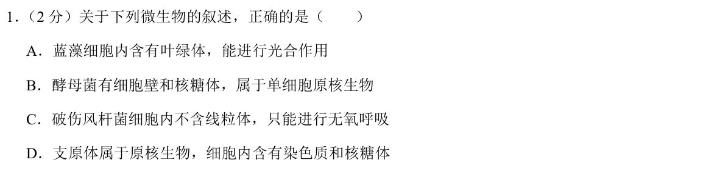
原始配图 1 · 第1题原题图版所用高中知识
细胞是否具有核膜包被的细胞核，是原核与真核的根本区别。核糖体两者都有；线粒体和叶绿体等膜性细胞器仅见于真核细胞。
读题与思路
蓝藻、支原体是原核而无叶绿体/典型染色质，酵母菌却是真核。破伤风杆菌既无粒体又为厌氧菌，故C成立；不能把所有无粒体细菌均说成只无氧呼吸。
分步解析
- A：蓝藻属于原核生物，含光合色素和相应酶，能光合作用，但没有叶绿体。
- B：酵母菌属于真菌，是真核生物；有细胞壁和核糖体不能据此判成原核。
- C：破伤风杆菌为厌氧细菌，没有线粒体，依靠无氧代谢，符合描述。
- D：支原体有核糖体和DNA，但无由DNA与蛋白质构成的典型染色质。
检查与易错点
原核生物不都进行无氧呼吸。某些细菌没有线粒体仍可进行有氧呼吸；本题C还依赖破伤风杆菌的厌氧性。
本题来源：paper · doc-supplied · web-current-pdf
返回原卷作答与计分说明
题目与已知条件
（2分）以下生物学实验的部分操作过程，正确的是（ ）
| 实验名称 | 实验操作 |
| A | 检测生物组织中的还原糖 | 在待测液中先加NaOH溶液，再加CuSO4溶液 |
| B | 观察细胞中DNA和RNA的分布 | 先加甲基绿染色，再加吡罗红染色 |
| C | 观察细胞中的线粒体 | 先用盐酸水解，再用健那绿染色 |
| D | 探究酵母菌种群数量变化 | 先将盖玻片放在计数室上，再在盖玻片边缘滴加培养液 |
A. A B. B C. C D. D
查看原题图／原始配图
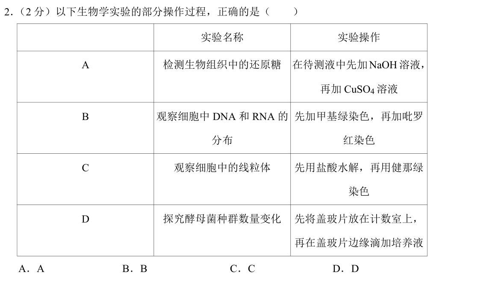
原始配图 1 · 第2题原题图版所用高中知识
实验操作顺序取决于原理。斐林试剂现配现用；甲基绿和吡罗红混合染色；健那绿用于活细胞；计数室需有确定深度。
读题与思路
还原糖检测试剂须现配混合；甲基绿/吡罗红也用混合染色；健那绿需活细胞，不能先盐酸水解。计数板先盖片后边缘滴加才能维持规定室深，选D。
分步解析
- A：斐林试剂的NaOH和CuSO₄应先混合后加入待测液，再水浴加热；题中分先后加入不合要求。
- B：观察DNA和RNA分布用甲基绿—吡罗红混合染液，不是先后两次染色。
- C：盐酸水解会破坏活细胞状态，不能接在健那绿活体染色之前。
- D：先放盖玻片，再由边缘滴加，让培养液借毛细作用充满计数室；深度才受规范控制。
检查与易错点
血细胞计数板装样后要待细胞沉降再计数；若先滴后盖，多余液体可使计数室深度或分布失真。
本题来源：paper · doc-supplied · web-current-pdf
返回原卷作答与计分说明
题目与已知条件
（2分）质壁分离和质壁分离复原是某些生物细胞响应外界水分变化而发生的渗透调节过程。下列叙述错误的是（）
A. 施肥过多引起的“烧苗”现象与质壁分离有关
B. 质壁分离过程中，细胞膜可局部或全部脱离细胞壁
C. 质壁分离复原过程中，细胞的吸水能力逐渐降低
D. 1mol/L NaCl溶液和1mol/L蔗糖溶液的渗透压大小相等
查看原题图／原始配图
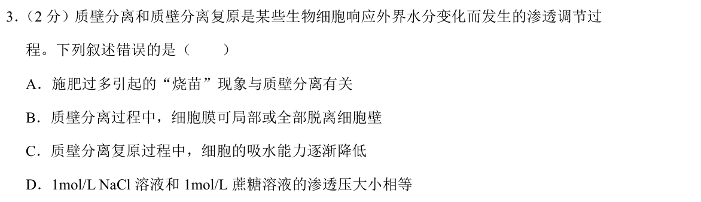
原始配图 1 · 第3题原题图版所用高中知识
渗透压与单位体积溶液中溶质微粒数相关。活的成熟植物细胞失水时，原生质层缩小程度大于细胞壁；复原时吸水使细胞液稀释。
读题与思路
过肥可使失水分离，原生质层可脱离壁，复原时细胞液稀释而吸水能力下降。NaCl电离为两类离子，同物质的量浓度不等于同渗透粒子浓度，D错。
分步解析
- A：过量施肥使土壤溶液浓度升高，根细胞失水，可出现质壁分离并造成烧苗。
- B：细胞膜随原生质层收缩，可与细胞壁局部或大范围分离。
- C：复原过程中细胞液逐渐稀释，吸水能力随之减弱。
- D：NaCl在水中解离为Na⁺和Cl⁻，蔗糖不解离；同为1 mol/L时实际微粒数不同，渗透压不相等。
检查与易错点
不能只比较“1 mol/L”就认为渗透压相同。高中模型忽略非理想性时，NaCl的微粒浓度约为蔗糖的2倍。
本题来源：paper · doc-supplied · web-current-pdf
返回原卷作答与计分说明
题目与已知条件
（2分）某草原生态系统中植物和食草动物两个种群数量的动态模型如图所示。下列叙述错误的是（）
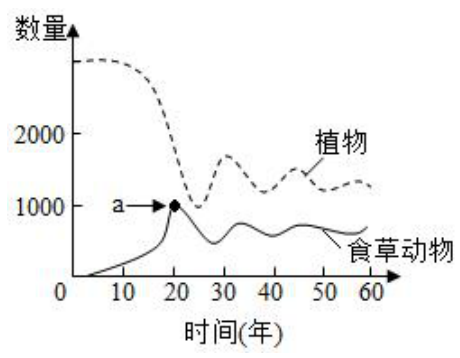
A. 食草动物进入早期，其种群数量增长大致呈“J”型曲线
B. 图中点a的纵坐标值代表食草动物的环境容纳量
C. 该生态系统的相对稳定与植物和食草动物之间的负反馈调节有关
D. 过度放牧会降低草原生态系统的抵抗力稳定性
查看原题图／原始配图
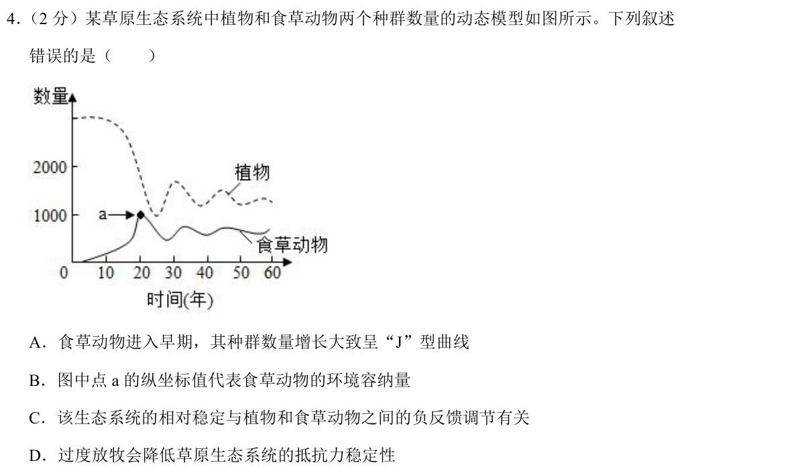
原始配图 1 · 第4题原题图版所用高中知识
环境容纳量是给定环境条件下种群能够维持的数量水平。捕食关系形成负反馈，种群数量常在一定水平附近波动。
读题与思路
a为动物数量一次超调峰，后续长期在较低数量波动，不能把峰值当K，故B错。资源丰富时短期J形、食物反馈、过牧降抵抗力均符合图意。
分步解析
- 进入初期草料充足，食草动物数量可近似按J形增长，A成立。
- a是食草动物进入后的第一次数量高峰；后续该种群在更低水平附近波动，该瞬时峰值不能代表长期可维持的环境容纳量。
- 食草动物增加会减少植物，食物减少又限制动物，形成负反馈，C成立。
- 过度放牧破坏植被，削弱生态系统结构和调节能力，抵抗力稳定性下降，D成立。
检查与易错点
种群短期可以超过环境容纳量，随后因食物不足等下降；不能用某次波峰直接认定K值。
本题来源：paper · doc-supplied · web-current-pdf
返回原卷作答与计分说明
题目与已知条件
（2分）某些蛋白质在蛋白激酶和蛋白磷酸酶的作用下，可在特定氨基酸位点发生磷酸化和去磷酸化，参与细胞信号传递，如图所示。下列叙述错误的是（）
A.这些蛋白质磷酸化和去磷酸化过程体现了蛋白质结构与功能相适应的观点
B. 这些蛋白质特定磷酸化位点的氨基酸缺失，不影响细胞信号传递
C. 作为能量“通货”的ATP能参与细胞信号传递
D. 蛋白质磷酸化和去磷酸化反应受温度的影响
查看原题图／原始配图
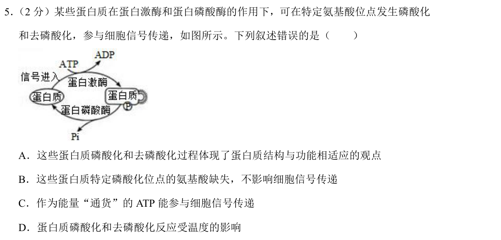
原始配图 1 · 第5题原题图版所用高中知识
蛋白激酶催化磷酸基团转移，蛋白磷酸酶催化去磷酸化。蛋白质的结构状态变化可改变其活性，ATP兼有供能和提供磷酸基团的作用。
读题与思路
ATP提供磷酸基团，酶促磷酸化改变信号蛋白结构与功能，温度影响酶。删除该磷酸化位点会影响信号传递，B的不影响错误。
分步解析
- A：磷酸化改变蛋白质结构和作用状态，说明结构与功能相适应。
- B：特定氨基酸位点缺失可使相应磷酸化不能发生，进而干扰信号传递，因此“不影响”错误。
- C：ATP参与磷酸化，能参与信号转导。
- D：两种酶的催化均受温度影响，温度变化会影响反应速率。
检查与易错点
磷酸化不一定使所有蛋白质“激活”，去磷酸化也不一定使其“失活”；要按具体蛋白质和图意判断。
本题来源：paper · doc-supplied · web-current-pdf
返回原卷作答与计分说明
题目与已知条件
（2分）鸡尾部的法氏囊是B淋巴细胞的发生场所。传染性法氏囊病病毒（IBDV）感染雏鸡后，可导致法氏囊严重萎缩。下列叙述错误的是（）
A. 法氏囊是鸡的免疫器官
B. 传染性法氏囊病可能导致雏鸡出现免疫功能衰退
C. 将孵出当日的雏鸡摘除法氏囊后，会影响该雏鸡B淋巴细胞的产生
D. 雏鸡感染IBDV发病后，注射IBDV灭活疫苗能阻止其法氏囊萎缩
查看原题图／原始配图
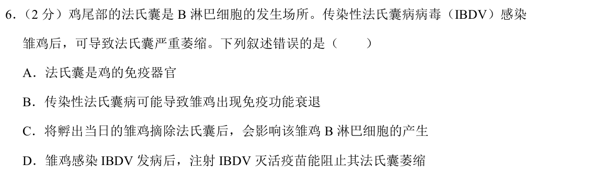
原始配图 1 · 第6题原题图版所用高中知识
免疫器官是免疫细胞发生、成熟或发挥作用的场所。疫苗通过抗原刺激产生免疫记忆，形成保护需要时间。
读题与思路
B细胞发生器官受损或摘除会削弱免疫。已发病后注射灭活疫苗不是及时逆转组织损伤的方法，故D错误，余项由法氏囊功能可推。
分步解析
- 法氏囊与B淋巴细胞发生有关，属于免疫器官，A正确。
- 病毒使法氏囊萎缩，B细胞形成受损，免疫功能可能下降，B正确。
- 刚孵出的雏鸡摘除该器官，会影响B细胞产生，C正确。
- 已经发病后注射灭活疫苗，不能据此阻止已发生的法氏囊损伤；疫苗主要用于预防，D错误。
检查与易错点
不能把疫苗等同于直接清除病毒、修复器官的药物。
本题来源：paper · doc-supplied · web-current-pdf
返回原卷作答与计分说明
题目与已知条件
（2分）绿色植物的光合作用是在叶绿体内进行的一系列能量和物质转化过程。下列叙述错误的是（）
A. 弱光条件下植物没有O2的释放，说明未进行光合作用
B. 在暗反应阶段，CO2不能直接被还原
C. 在禾谷类作物开花期剪掉部分花穗，叶片的光合速率会暂时下降
D. 合理密植和增施有机肥能提高农作物的光合作用强度
查看原题图／原始配图
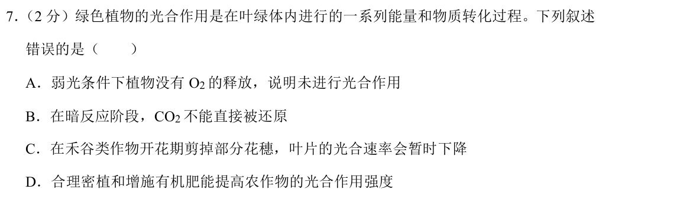
原始配图 1 · 第7题原题图版所用高中知识
光合作用吸收CO₂、释放O₂，呼吸作用相反；测得的气体净交换量是两过程的差。暗反应先固定CO₂再还原C₃。
读题与思路
无净氧释放只说明产氧未超过呼吸耗氧，不能证明未光合，A错。CO₂先固定再还原；剪花穗减少同化物输出可反馈抑制；合理密植施有机肥可提高总体利用。
分步解析
- 弱光时总光合产氧可被呼吸全部消耗，即使不向外释放O₂仍能光合作用，A错误。
- CO₂先与C₅结合生成C₃，再被还原，B正确。
- 剪去花穗减少有机物的输出和消耗，叶内同化产物积累可暂时抑制光合，C正确。
- 合理密植提高光能利用；有机肥分解提供CO₂和矿质营养，可提高农作物光合作用，D正确。
检查与易错点
“无O₂释放”是没有净释放，不是叶绿体一定没有产氧。暗反应并非只能在黑暗中进行。
本题来源：paper · doc-supplied · web-current-pdf
返回原卷作答与计分说明
题目与已知条件
（2分）金鱼系野生鲫鱼经长期人工选育而成，是中国古代劳动人民智慧的结晶。现有形态多样、品种繁多的金鱼品系。自然状态下，金鱼能与野生鲫鱼杂交产生可育后代。下列叙述错误的是（）
A. 金鱼与野生鲫鱼属于同一物种
B. 人工选择使鲫鱼发生变异，产生多种形态
C. 鲫鱼进化成金鱼的过程中，有基因频率的改变
D. 人类的喜好影响了金鱼的进化方向
查看原题图／原始配图
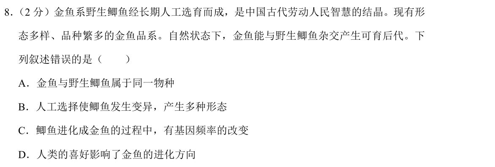
原始配图 1 · 第8题原题图版所用高中知识
同种生物之间能交配并产生可育后代。进化的实质是种群基因频率变化；变异先产生，选择改变不同变异的保留概率。
读题与思路
可育杂交后代说明同种，人工选育可改变频率与方向，却不是人为选择定向产生变异，B错。
分步解析
- 金鱼与野生鲫鱼能产生可育后代，未形成生殖隔离，属于同一物种。
- 变异的产生具有不定向性，人工选择不能按人的需求诱导产生特定变异，B错误。
- 长期选育改变不同基因型的繁殖机会，会改变基因频率。
- 人类偏好决定选留哪类个体，因此影响人工选择下的进化方向。
检查与易错点
“选择导致进化”不等于“选择定向制造变异”；同一物种内也能发生进化。
本题来源：paper · doc-supplied · web-current-pdf
返回原卷作答与计分说明
题目与已知条件
（2分）某国家男性中不同人群肺癌死亡累积风险如图所示。下列叙述错误的是（）
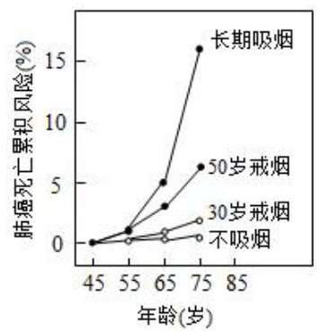
A. 长期吸烟的男性人群中，年龄越大，肺癌死亡累积风险越高
B.烟草中含有多种化学致癌因子，不吸烟或越早戒烟，肺癌死亡累积风险越低
C. 肺部细胞中原癌基因执行生理功能时，细胞生长和分裂失控
D. 肺部细胞癌变后，癌细胞彼此之间黏着性降低，易在体内分散和转移
查看原题图／原始配图
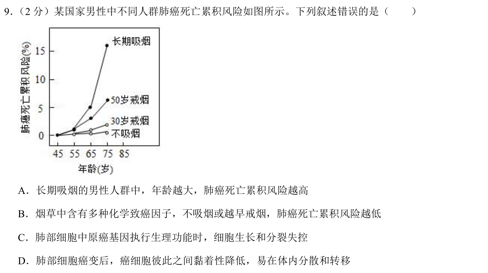
原始配图 1 · 第9题原题图版所用高中知识
正常原癌基因参与细胞正常生长和分裂调控；其异常激活以及抑癌基因失常等可引起癌变。癌细胞黏着性降低有利于转移。
读题与思路
图示长期吸烟风险随年龄升、早戒低；癌细胞黏着性低易转移。原癌基因正常执行功能时不致失控，应是相关基因异常，C错。
分步解析
- 长期吸烟曲线随年龄增长上升，累积风险增大，A符合图。
- 不同戒烟年龄曲线支持较早戒烟风险较低；烟草含致癌物，B成立。
- 原癌基因正常执行功能不使分裂失控，发生异常才可能参与癌变，C错误。
- 癌变细胞表面黏着性降低，更易离开原组织并转移，D正确。
检查与易错点
图中是人群累积风险，不能直接据曲线诊断某一个人；本题只讨论考试图表和机制。
本题来源：paper · doc-supplied · web-current-pdf
返回原卷作答与计分说明
题目与已知条件
（2分）有些人的性染色体组成为XY，其外貌与正常女性一样，但无生育能力，原因是其X染色体上有一个隐性致病基因a，而Y染色体上没有相应的等位基因。某女性化患者的家系图谱如图所示。下列叙述错误的是（）
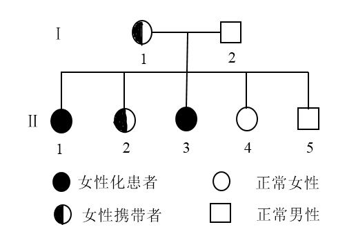
A. Ⅱ-1的基因型为XaY
B. Ⅱ-2与正常男性婚后所生后代的患病概率为1/4
C. I-1的致病基因来自其父亲或母亲
D. 人群中基因a的频率将会越来越低
查看原题图／原始配图
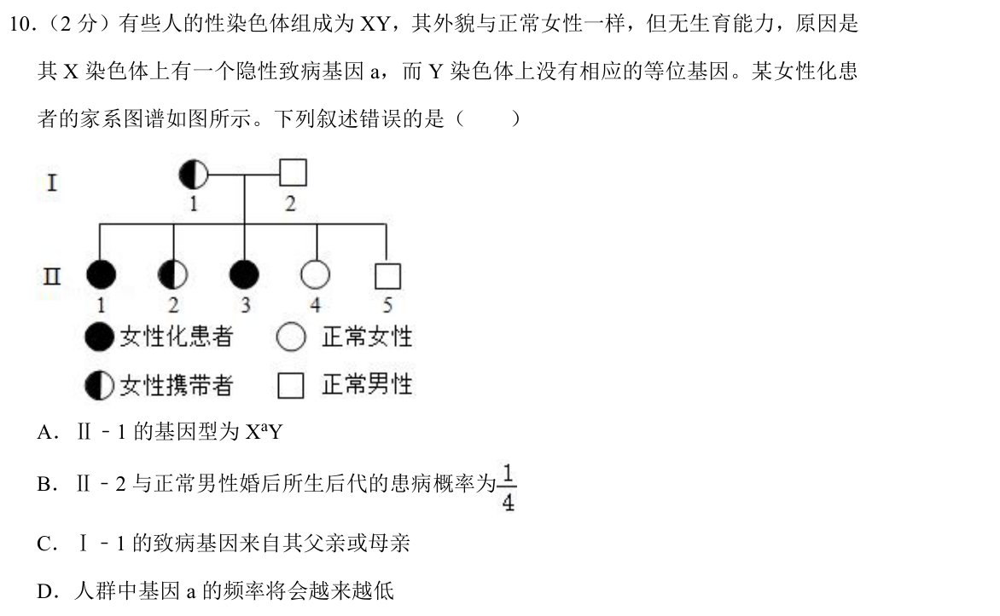
原始配图 1 · 第10题原题图版所用高中知识
本题致病基因位于X染色体，XY且携带a者表现女性化并无生育能力。家系传递还要同时满足题给生育限制。
读题与思路
女性化患者为XᵃY且不育；因此Ⅰ-1的a不能由父亲遗传。Ⅱ-2携带者配正常男生患者概率1/2×1/2=1/4；选错误项C。D限于题设无新突变等简化模型。
分步解析
- Ⅱ-1为女性化患者，基因型XᵃY，A正确。
- Ⅱ-2为携带者XᴬXᵃ，与XᴬY婚配，四种组合等概率，XᵃY占1/4，B正确。
- Ⅰ-1为携带者，其父若携带a则只能为XᵃY，而这类个体无生育能力；因此她的a只能来自母亲，C错误。
- 在题设不计新突变、迁移等因素的模型中，患者不能生育使a受到选择淘汰，D符合题意。
检查与易错点
不能把XᵃY按外貌当作XX女性；其性染色体组成和配子能力已由题目明确。D是题设模型中的趋势，不是对所有现实种群的无条件定理。
本题来源：paper · doc-supplied · web-current-pdf
返回原卷作答与计分说明
题目与已知条件
（2分）研究人员利用电压钳技术改变枪乌贼神经纤维膜电位，记录离子进出细胞引发的膜电流变化，结果如图所示，图a为对照组，图b和图c分别为通道阻断剂TTX、TEA处理组。下列叙述正确的是（）
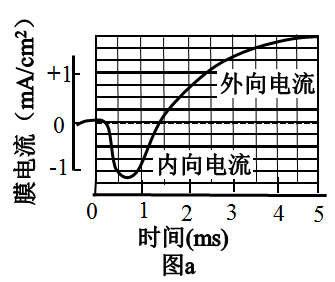
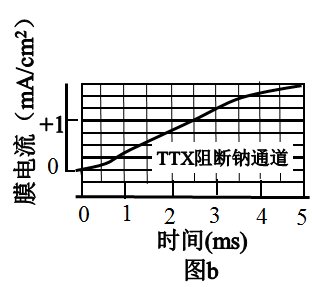
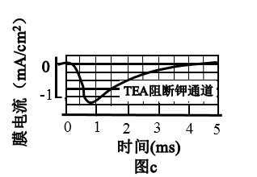
A. TEA处理后，只有内向电流存在
B. 外向电流由Na+通道所介导
C. TTX处理后，外向电流消失
D. 内向电流结束后，神经纤维膜内Na+浓度高于膜外
查看原题图／原始配图
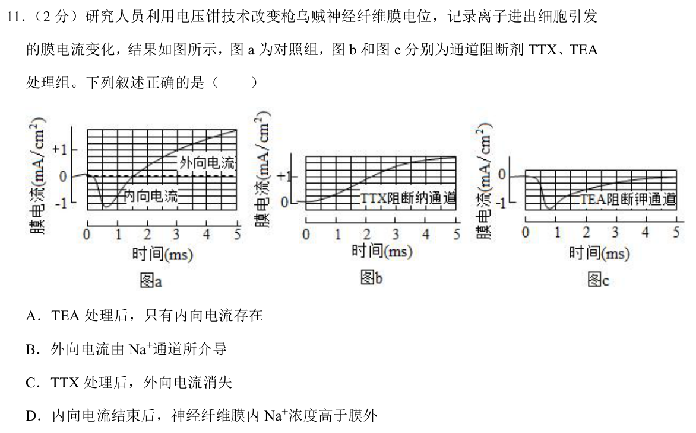
原始配图 1 · 第11题原题图版所用高中知识
Na⁺顺电化学梯度内流形成内向电流，K⁺外流形成外向电流；一次动作电位仅涉及少量离子移动。
读题与思路
TTX去内向Na⁺电流，TEA去外向K⁺电流，故A正确、B/C反了。动作电位所需离子数量很少，不会使整体胞内Na⁺浓度超过胞外，D错误。
分步解析
- TTX处理后内向成分消失、外向成分保留，说明TTX阻断Na⁺通道。
- TEA处理后外向成分消失、内向成分保留，说明TEA阻断K⁺通道，故A正确。
- 外向电流主要由K⁺通道介导，B错误；TTX不会使该外向电流消失，C错误。
- Na⁺流入虽能改变膜电位，但不倒置细胞内外总体Na⁺浓度，膜外仍高，D错误。
检查与易错点
电流曲线正负不能称为“膜电位正负”。“膜内变正”也不是膜内Na⁺浓度超过膜外。
本题来源：paper · doc-supplied · web-current-pdf
返回原卷作答与计分说明
题目与已知条件
（2分）下列有关细胞呼吸原理应用的叙述，错误的是（ ）
A.南方稻区早稻浸种后催芽过程中，常用40℃左右温水淋种并时常翻种，可以为种子的呼吸作用提供水分、适宜的温度和氧气
B.农作物种子入库贮藏时，在无氧和低温条件下呼吸速率降低，贮藏寿命显著延长
C. 油料作物种子播种时宜浅播，原因是萌发时呼吸作用需要大量氧气
D.柑橘在塑料袋中密封保存，可以减少水分散失、降低呼吸速率，起到保鲜作用
查看原题图／原始配图
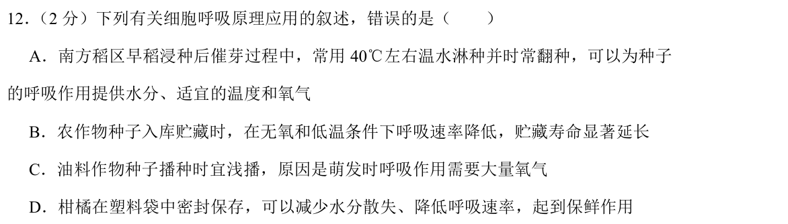
原始配图 1 · 第12题原题图版所用高中知识
温度、水分、氧浓度影响呼吸。保存时要降低消耗而维持细胞生活；完全无氧可导致有害发酵产物积累。
读题与思路
萌发需水温氧，油料氧化需氧多，低氧保鲜可减呼吸。长期完全无氧损伤种子，B把低氧说成无氧，错误。
分步解析
- 催芽提供水、适温和氧，能促进代谢，翻种改善通气，A正确。
- 种子贮藏宜低温、干燥和适度低氧；长期无氧可损伤种子，不能保证寿命显著延长，B错误。
- 脂肪氧化耗氧多，油料种子浅播利于供氧，C正确。
- 题设塑料袋保鲜可减少失水并形成低氧环境，抑制呼吸，D符合题意。
检查与易错点
D不能外推为水果在绝对无氧密闭环境中可无限期保存；题目的关键错误是B将低氧替换为无氧。
本题来源：paper · doc-supplied · web-current-pdf
返回原卷作答与计分说明
题目与已知条件
（4分）细胞内不同基因的表达效率存在差异，如图所示。下列叙述正确的是（）
A.细胞能在转录和翻译水平上调控基因表达，图中基因A的表达效率高于基因B
B. 真核生物核基因表达的①和②过程分别发生在细胞核和细胞质中
C. 人的mRNA、rRNA和tRNA都是以DNA为模板进行转录的产物
D. ②过程中，rRNA中含有与mRNA上密码子互补配对的反密码子
查看原题图／原始配图
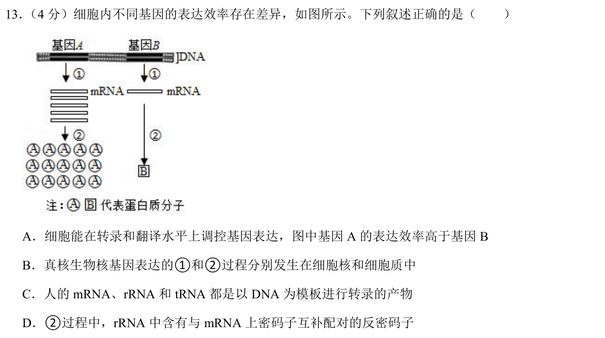
原始配图 1 · 第13题原题图版所用高中知识
基因表达包括转录和翻译。mRNA为翻译模板，tRNA运载氨基酸且具有反密码子，rRNA是核糖体组成成分。
读题与思路
图A既有较多转录本又产生较多蛋白，说明两个层面可调控；核基因转录/翻译分隔，三类RNA都由DNA转录。反密码子属于tRNA不是rRNA，故ABC。
分步解析
- 基因A最终产生较多蛋白质，转录量、翻译量都可成为调控环节，A正确。
- 真核核基因的转录在细胞核，翻译在细胞质的核糖体，B正确。
- 三类RNA均可由相应DNA序列转录形成，C正确。
- 与密码子配对的反密码子位于tRNA，不能写为rRNA，D错误。
检查与易错点
“RNA都参与翻译”并不意味着三类RNA都带反密码子；核基因表达地点不要与线粒体、叶绿体自身基因混淆。
本题来源：paper · doc-supplied · web-current-pdf
返回原卷作答与计分说明
题目与已知条件
（4分）独脚金内酯（SL）是近年来新发现的一类植物激素。SL合成受阻或SL不敏感突变体都会出现顶端优势缺失。现有拟南芥SL突变体1（max1）和SL突变体2（max2），其生长素水平正常，但植株缺失顶端优势，与野生型（W）形成明显区别；在幼苗期进行嫁接试验，培养后植株形态如图所示。据此分析，下列叙述正确的是（）
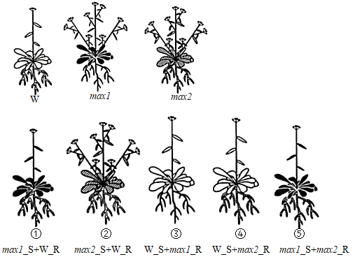
注：R代表根，S代表地上部分，“+”代表嫁接。
A. SL不能在产生部位发挥调控作用
B. max1不能合成SL，但对SL敏感
C. max2对SL不敏感，但根能产生SL
D. 推测max2_S+max1_R表现顶端优势缺失
查看原题图／原始配图
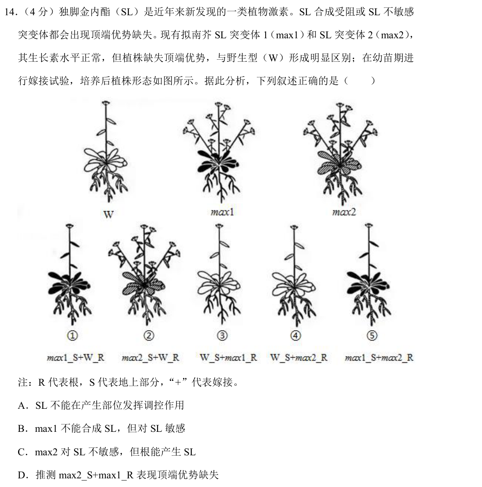
原始配图 1 · 第14题原题图版所用高中知识
激素调节既需有激素，又需靶部位能感受。嫁接可以把合成来源与地上部分的响应能力分开研究。
读题与思路
max1接野生根恢复，证明它能响应而缺合成；max2接野生根不恢复却能用其根救max1，说明它能合成而缺响应。max2接max1根仍不敏感，BCD。图不能支持激素不能原位作用。
分步解析
- max1地上部分接野生型根后恢复顶端优势，说明max1仍能感受SL，本身主要为合成受阻，B正确。
- max2地上部分接野生型根仍不恢复，说明max2响应异常。max2根能使max1地上部恢复，说明其根能产生SL，C正确。
- max2地上部即使与max1根嫁接仍无法正常感受SL，预测顶端优势缺失，D正确。
- 试验不能支持SL不能在产生部位作用，A错误。
检查与易错点
D的核心是max2地上部不敏感，不宜笼统说整个嫁接体“完全不能合成SL”。
本题来源：paper · doc-supplied · web-current-pdf
返回原卷作答与计分说明
题目与已知条件
（4分）血浆中胆固醇与载脂蛋白apoB-100结合形成低密度脂蛋白（LDL），LDL通过与细胞表面受体结合，将胆固醇运输到细胞内，从而降低血浆中胆固醇含量。PCSK9基因可以发生多种类型的突变，当突变使PCSK9蛋白活性增强时，会增加LDL受体在溶酶体中的降解，导致细胞表面LDL受体减少。下列叙述错误的是（）
A. 引起LDL受体缺失的基因突变会导致血浆中胆固醇含量升高
B. PCSK9基因的有些突变可能不影响血浆中LDL的正常水平
C. 引起PCSK9蛋白活性降低的基因突变会导致血浆中胆固醇含量升高
D. 编码apoB-100的基因失活会导致血浆中胆固醇含量升高
查看原题图／原始配图
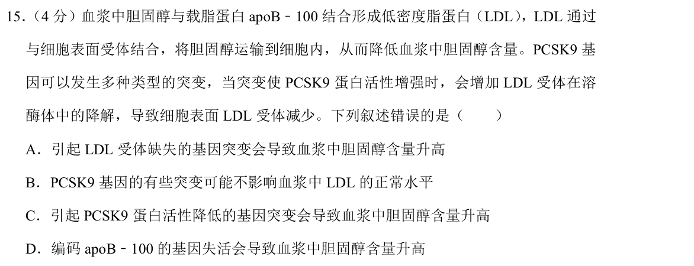
原始配图 1 · 第15题原题图版所用高中知识
LDL经膜受体摄入细胞。PCSK9活性增强会促进受体降解，受体越少，血浆胆固醇的清除越弱。基因突变不一定改变功能。
读题与思路
PCSK9活性下降→受体降解减少→膜受体增加→血胆固醇摄取增多，所以C方向错。受体缺失/apoB失效会妨碍摄取，静默等突变也可无效应，A/B/D可成立。
分步解析
- A：受体缺失降低摄入，血浆胆固醇升高，正确。
- B：有些突变不改变氨基酸或蛋白质活性，可能不改变LDL正常水平，正确。
- C：PCSK9活性降低使受体降解减少，通常使膜受体增多、胆固醇清除增强；“升高”方向相反，错误。
- D：按题设，apoB-100失活影响LDL形成和受体识别途径，胆固醇转入细胞受阻，正确。
检查与易错点
本题按所给简化代谢关系判断，不把“某基因突变”统一视作功能增强或功能丧失。
本题来源：paper · doc-supplied · web-current-pdf
返回原卷作答与计分说明
题目与已知条件
（4分）有研究报道，某地区近40年内森林脊椎动物种群数量减少了80.9%。该时段内，农业和城镇建设用地不断增加，挤占和蚕食自然生态空间，致使森林生态系统破碎化程度增加。下列叙述正确的是（）
A. 森林群落植物多样性高时，可为动物提供多样的栖息地和食物
B. 森林生态系统破碎化有利于生物多样性的形成
C. 保护生物多样性，必须禁止一切森林砍伐和野生动物捕获的活动
D. 农业和城镇建设需遵循自然、经济、社会相协调的可持续发展理念
查看原题图／原始配图
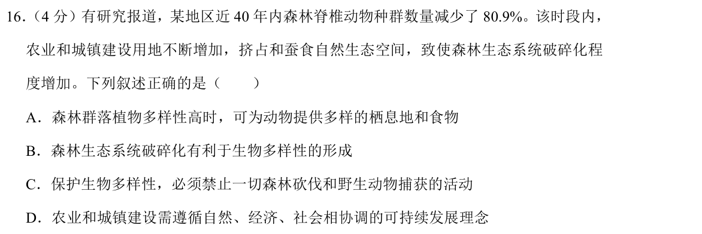
原始配图 1 · 第16题原题图版所用高中知识
生物多样性包含基因、物种、生态系统三个层次。植物给动物提供食物和栖息空间；栖息地面积与连通性影响种群维持。
读题与思路
多样植被提供多样食物栖息地，开发须兼顾自然经济社会，AD成立。破碎化一般增灭绝风险；保护不等于禁止一切合理利用，B/C错误。
分步解析
- 植物种类与结构多样可提供多样食物和栖息位点，A正确。
- 森林破碎化使种群变小、迁移和交流受阻，增加局部灭绝风险，不能概括为有利于多样性，B错误。
- 保护强调合理利用和控制强度，并非任何砍伐捕获都必须禁止，C过于绝对。
- 农业城镇建设需兼顾自然、经济、社会协调，D正确。
检查与易错点
地理隔离可能参与物种形成，但不能据此推出当代人为栖息地破碎化一定有利于生物多样性。
本题来源：paper · doc-supplied · web-current-pdf
返回原卷作答与计分说明
题目与已知条件
油菜是我国重要的油料作物，油菜株高适当的降低对抗倒伏及机械化收割均有重要意义。某研究小组利用纯种高秆甘蓝型油菜Z，通过诱变培育出一个纯种半矮秆突变体S。为了阐明半矮秆突变体S是由几对基因控制、显隐性等遗传机制，研究人员进行了相关试验，如图所示。
回答下列问题：
（1）根据F2表现型及数据分析，油菜半矮秆突变体S的遗传机制是______，杂交组合①的F1产生各种类型的配子比例相等，自交时雌雄配子有______种结合方式，且每种结合方式概率相等。F1产生各种类型配子比例相等的细胞遗传学基础是______。
（2）将杂交组合①的F2所有高秆植株自交，分别统计单株自交后代的表现型及比例，分为三种类型，全为高秆的记为F3-Ⅰ，高秆与半矮秆比例和杂交组合①、②的F2基本一致的记为F3-Ⅱ，高秆与半矮秆比例和杂交组合③的F2基本一致的记为F3-Ⅲ。产生F3-Ⅰ、F3-Ⅱ、F3-Ⅲ的高秆植株数量比为______。产生F3-Ⅲ的高秆植株基因型为______（用A、a；B、b；C、c……表示基因）。用产生F3-Ⅲ的高秆植株进行相互杂交试验，能否验证自由组合定律？______。
查看原题图／原始配图
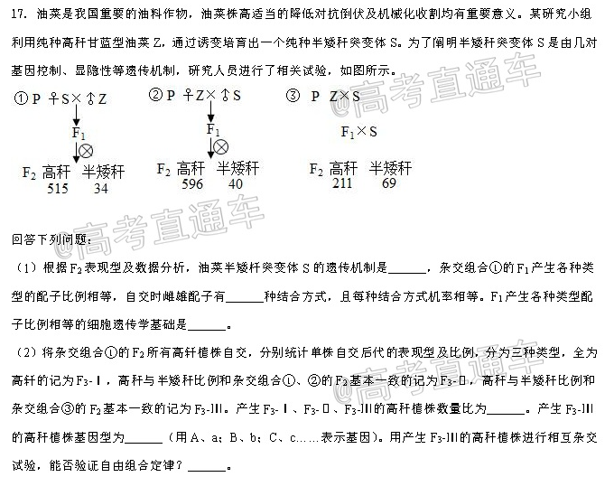
原始配图 1 · 第17题原题图版所用高中知识
两对独立遗传基因的双杂合子自交有16种等概率配子组合。15∶1可由“只要有任一显性基因即高秆，aabb才半矮秆”产生。
读题与思路
正反交F₂约15:1，回交F₁×S约3:1，对应两对隐性共同成aabb半矮秆，F₁四配子各1/4、16种受精组合。高秆F₂自交全高、15:1、3:1的原亲本权重7、4、4；后者Aabb/aaBb各仅单杂合，其互交不区分两基因连锁与否，不能验证自由组合。
分步解析
- 设高秆纯种Z为AABB、S为aabb，F₁为AaBb。配子AB、Ab、aB、ab各1/4，自交4×4=16种组合。减数分裂时等位基因分离、非同源染色体上的非等位基因自由组合。
- F₂高秆个体按自交后代分类：至少有AA或BB的AABB、AABb、AaBB、AAbb、aaBB，权重1+2+2+1+1=7，后代全高；AaBb权重4，自交15∶1；Aabb和aaBb各权重2，自交3∶1。
- 所以三类亲本数量为7∶4∶4，产生F₃-Ⅲ的基因型是Aabb和aaBb。
- 将这些单杂合亲本彼此杂交时，每个亲本仅在一个位点杂合，其配子分离不需要两对杂合基因自由组合；无论两基因连锁与否均不能由此获得可区分的结果，不能验证自由组合定律。
答案
（1）两对位于非同源染色体上的隐性基因共同控制半矮秆（aabb）；16；减数分裂时同源染色体上的等位基因分离，非同源染色体上的非等位基因自由组合。（2）7∶4∶4；Aabb、aaBb；不能。
检查与易错点
组合③是F₁×S（测交），不是自交。“所有高秆植株自交”按单株子代分类，不是把全部后代混合后再计比例。
本题来源：paper · scan · doc-supplied · web-current-pdf
返回原卷作答与计分说明
题目与已知条件
（12分）图a为叶绿体的结构示意图，图b为叶绿体中某种生物膜的部分结构及光反应过程的简化示意图。回答下列问题：
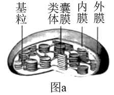
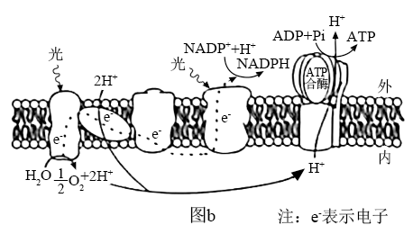
（1）图b表示图a中的______结构，膜上发生的光反应过程将水分解成O2、H+和e-，光能转化成电能，最终转化为______和ATP中活跃的化学能。若CO2浓度降低．暗反应速率减慢，叶绿体中电子受体NADP+减少，则图b中电子传递速率会______（填“加快”或“减慢”）。
（2）为研究叶绿体的完整性与光反应的关系，研究人员用物理、化学方法制备了4种结构完整性不同的叶绿体，在离体条件下进行实验，用Fecy或DCIP替代NADP+为电子受体，以相对放氧量表示光反应速率，实验结果如表所示。
叶绿体类型
相对值
实验项目 | 叶绿体A：双层膜结构完整 | 叶绿体B：双层膜局部受损，类囊体略有损伤 | 叶绿体C：双层膜瓦解，类囊体松散但未断裂 | 叶绿体D：所有膜结构解体破裂成颗粒或片段 |
| 实验一：以Fecy为电子受体时的放氧量 | 100 | 167.0 | 425.1 | 281.3 |
| 实验二：以DCIP为电子受体时的放氧量 | 100 | 106.7 | 471.1 | 109.6 |
注：Fecy具有亲水性，DCIP具有亲脂性。
据此分析：
①叶绿体A和叶绿体B的实验结果表明，叶绿体双层膜对以________（填“Fecy”或“DCIP”）为电子受体的光反应有明显阻碍作用，得出该结论的推理过程是________。
②该实验中，光反应速率最高的是叶绿体C，表明在无双层膜阻碍、类囊体又松散的条件下，更有利于________，从而提高光反应速率。
③以DCIP为电子受体进行实验，发现叶绿体A、B、C和D的ATP产生效率的相对值分别为1、0.66、0.58和0.41。结合图b对实验结果进行解释________。
查看原题图／原始配图
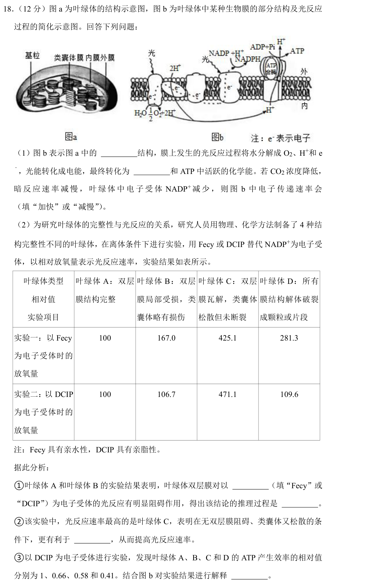
原始配图 1 · 第18题原题图版所用高中知识
类囊体膜承载光反应。电子由水经传递链流向受体；H⁺跨膜浓度差驱动ATP合成酶工作。电子传递和ATP合成相互联系，但膜损伤后可以部分脱偶联。
读题与思路
类囊体电子最终还原NADP⁺生成NADPH；CO₂缺少使受体再生减慢。A→B的Fecy增67%而DCIP仅6.7%，提示亲水受体受双层膜屏障。C松散利于接触，膜破损加重则难维持H⁺梯度，使ATP耦联效率递降；放氧量与ATP效率不能等同。
分步解析
- 图b为类囊体膜；光能最终储存在NADPH（[H]）和ATP中。CO₂降低使暗反应消耗NADPH变慢、再生NADP⁺减少，电子受体不足使电子传递减慢。
- A→B时Fecy组由100升至167.0，增幅67%；DCIP组仅升至106.7，增幅6.7%。亲水Fecy不易透过完整脂质双层，膜受损后进入明显改善；亲脂DCIP受该屏障影响较小。
- C中双层膜瓦解、类囊体松散但未断裂，人工电子受体更易到达类囊体反应位点并接收电子，故放氧速率最高。
- ATP合成依赖跨类囊体膜的H⁺梯度。膜结构及其耦联状态受到破坏，可使H⁺梯度不易维持，降低经ATP合成酶转化能量的效率。这能解释ATP产生效率降低的总体趋势；表中C写明类囊体松散但未断裂，不能改写为每一组均已发生膜破裂。
答案
（1）类囊体膜；NADPH（或[H]）；减慢。（2）①Fecy；A→B时Fecy相对放氧量大幅提高而DCIP仅小幅提高，结合二者亲水/亲脂性可知双层膜主要阻碍Fecy到达反应部位。②人工电子受体与类囊体反应位点接触、电子传递。③膜损伤使H⁺梯度难以维持，降低ATP合成的耦联效率。
检查与易错点
不能用两个分别归一化的数值直接比较Fecy与DCIP的绝对放氧量；不能写“DCIP使H⁺少了，所以ATP少”作为四种结构差异的解释，也不能把H⁺简单写成制造ATP的化学原料。
表中没有逐组直接测量H⁺梯度，因此漏H⁺是结合图b提出的机制解释，不能把每一步效率下降都当成已直接证实的膜泄漏。尤其C组“类囊体未断裂”的限定必须保留。
本题来源：paper · doc-supplied · web-current-pdf
返回原卷作答与计分说明
题目与已知条件
生长激素对软骨细胞生长有促进作用，调节过程如图所示。回答下列问题
（1）根据示意图，可以确定软骨细胞具有________（填“GH受体”“IGF-1受体”或“GH受体和IGF-1受体”）。
（2）研究人员将正常小鼠和IGF-1基因缺失小鼠分组饲养后，检测体内GH水平。据图预测，IGF-1基因缺失小鼠体内GH水平应________（填“低于”“等于”或“高于”）正常小鼠，理由是________。
（3）研究人员拟以无生长激素受体的小鼠软骨细胞为实验材料，在细胞培养液中添加不同物质分组离体培养，验证生长激素可通过IGF-1促进软骨细胞生长。实验设计如表所示，A组为对照组。
| 组别 | A | B | C | D | E |
| 培养液中添加物质 | 无 | GH | IGF-1 | 正常小鼠去垂体后的血清 | ？ |
实验结果预测及分析：
①与A组比较，在B、C和D组中，软骨细胞生长无明显变化的是________组。
②若E组培养的软骨细胞较A组生长明显加快，结合本实验目的，推测E组培养液中添加物质是________。
查看原题图／原始配图
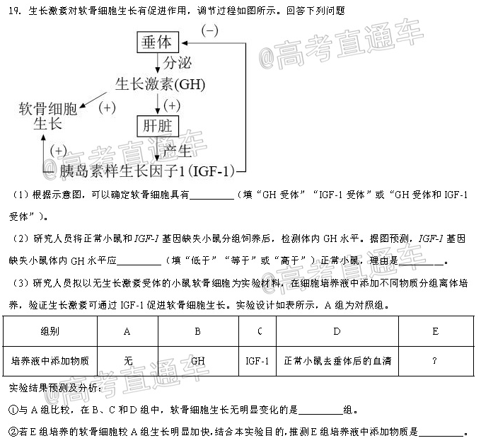
原始配图 1 · 第19题原题图版所用高中知识
激素需与受体结合才能作用。GH可直接作用软骨细胞，也可促肝脏产生IGF-1间接促进生长；IGF-1负反馈抑制垂体。
读题与思路
原图GH与IGF-1均正向促进软骨，故双受体。缺IGF-1解除对垂体的反馈抑制，GH升高。无GH受体细胞对GH无响应；去垂体血清在模型下缺足够IGF-1，故B/D不促进，正常血清中的IGF-1可使E促进。
分步解析
- 图中GH和IGF-1各有促进软骨细胞生长的途径，故正常软骨细胞具有两者受体。
- IGF-1基因缺失使IGF-1产生不足，垂体受到的负反馈抑制减弱，GH水平高于正常小鼠。
- B加GH，但实验细胞无GH受体，不能响应；C加IGF-1可直接促进；D来自去垂体小鼠，按题设调节模型GH缺乏、IGF-1降低，故B、D相对A无明显促进。
- E组应添加正常小鼠去垂体后注射过GH的血清：该血清中含有在GH作用下由肝脏等产生的IGF-1。与D组（去垂体、未注射GH的血清）相比，唯一差别是是否经过GH处理；软骨细胞无GH受体，若E组生长明显加快，说明GH是通过促进IGF-1产生而间接促进软骨细胞生长的。
答案
（1）GH受体和IGF-1受体。（2）高于；IGF-1缺失使对垂体分泌GH的负反馈抑制减弱。（3）①B、D；②正常小鼠去垂体后注射过GH的血清。
检查与易错点
E组与D组形成单一变量对照（是否经GH处理）。D应表述为题设模型下IGF-1降低、无明显促进，不应扩大为现实中任何时点“血清绝对没有IGF-1”。
本题来源：paper · scan · doc-supplied · web-current-pdf
返回原卷作答与计分说明
题目与已知条件
（9分）某林场有一片约2公顷的马尾松与石栎混交次生林，群落内马尾松、石栎两个种群的空间分布均为随机分布。为了解群落演替过程中马尾松和石栎种群密度的变化特征，某研究小组在该混交次生林中选取5个固定样方进行观测，每个样方的面积为0.04公顷，某一时期的观测结果如表所示。
| 树高X（m） | 马尾松（株） | 石栎（株） |
| 样方1 | 样方2 | 样方3 | 样方4 | 样方5 | 样方1 | 样方2 | 样方3 | 样方4 | 样方5 |
| X≤5 | 8 | 9 | 7 | 5 | 8 | 46 | 48 | 50 | 47 | 45 |
| 5<X≤10 | 25 | 27 | 30 | 28 | 30 | 30 | 25 | 28 | 26 | 27 |
| 10<X≤15 | 34 | 29 | 30 | 36 | 35 | 2 | 3 | 5 | 4 | 3 |
| X>15 | 13 | 16 | 14 | 15 | 12 | 3 | 2 | 1 | 2 | 2 |
| 合计 | 80 | 81 | 81 | 84 | 85 | 81 | 78 | 84 | 79 | 77 |
注：同一树种的树高与年龄存在一定程度的正相关性；两树种在幼年期时的高度基本一致。
回答下列问题：
（1）调查植物种群密度取样的关键是________；根据表中调查数据计算，马尾松种群密度为________。
（2）该群落中，马尾松和石栎之间的种间关系是________。马尾松是喜光的阳生树种，石栎是耐阴树种。根据表中数据和树种的特性预测该次生林数十年后优势树种是________，理由是________。
查看原题图／原始配图
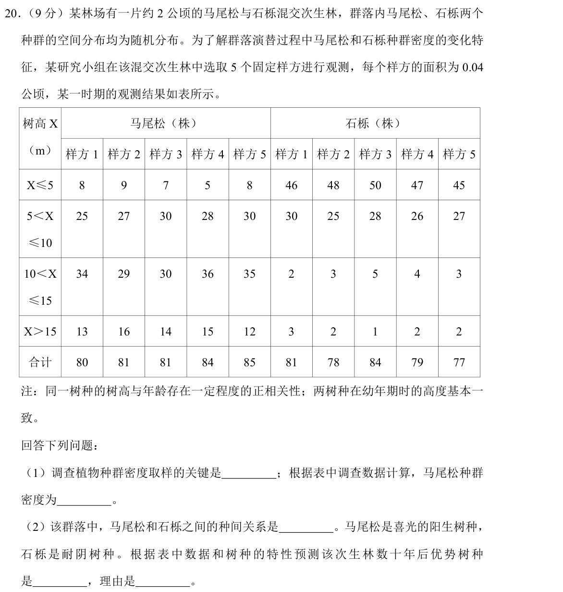
原始配图 1 · 第20题原题图版所用高中知识
样方法需随机取样。年龄结构可预测种群发展趋势；题给同种树高与年龄正相关，矮幼树数量反映更新能力，耐阴性影响林下生存。
读题与思路
马尾松总数411、实测面积0.20公顷，密度2055株/公顷。石栎幼龄236株远多于马尾松37株，且耐阴适于郁闭后的林下更新，未来优势种石栎。调查须随机，两树种为种间竞争。
分步解析
- 五个样方马尾松数合计80+81+81+84+85=411，面积5×0.04=0.20公顷，密度411÷0.20=2055株/公顷。
- 两树种共同争夺光、水、矿质营养和空间，属于种间竞争。
- 马尾松X≤5 m的幼树仅37株，石栎为236株；石栎幼龄个体显著多，种群更新潜力大。
- 林冠郁闭后喜光马尾松幼苗不利于生长，耐阴石栎能在林下更新并逐渐替代，预测数十年后优势种为石栎。
答案
（1）随机取样；2055株/公顷。（2）种间竞争；石栎；石栎幼龄个体多且耐阴，能在林下持续更新，马尾松幼龄个体少且喜光，更新受限。
检查与易错点
预测优势种要看年龄结构（幼龄个体数量）和树种对光的需求，不能只看当前高大植株的多少。也不要把调查区域2公顷误作实际取样面积。
本题来源：paper · doc-supplied · web-current-pdf
返回原卷作答与计分说明
题目与已知条件
[选修1：生物技术实践]（15分）大熊猫是我国特有的珍稀野生动物，每只成年大熊猫每日进食竹子量可达12~38kg。大熊猫可利用竹子中8%的纤维素和27%的半纤维素。研究人员从大熊猫粪便和土壤中筛选纤维素分解菌。回答下列问题：
（1）纤维素酶是一种复合酶，一般认为它至少包括三种组分，即________。为筛选纤维素分解菌，将大熊猫新鲜粪便样品稀释液接种至以________为唯一碳源的固体培养基上进行培养，该培养基从功能上分类属于________培养基。
（2）配制的培养基必须进行灭菌处理，目的是________。检测固体培养基灭菌效果的常用方法是________。
（3）简要写出测定大熊猫新鲜粪便中纤维素分解菌活菌数的实验思路________。
（4）为高效降解农业秸秆废弃物，研究人员利用从土壤中筛选获得的3株纤维素分解菌，在37℃条件下进行玉米秸秆降解实验，结果如表所示。在该条件下纤维素酶活力最高的是菌株________，理由是________。
| 菌株 | 秸秆总重(g) | 秸秆残重(g) | 秸秆失重（%） | 纤维素降解率（%） |
| A | 2.00 | 1.51 | 24.50 | 16.14 |
| B | 2.00 | 1.53 | 23.50 | 14.92 |
| C | 2.00 | 1.42 | 29.00 | 23.32 |
查看原题图／原始配图
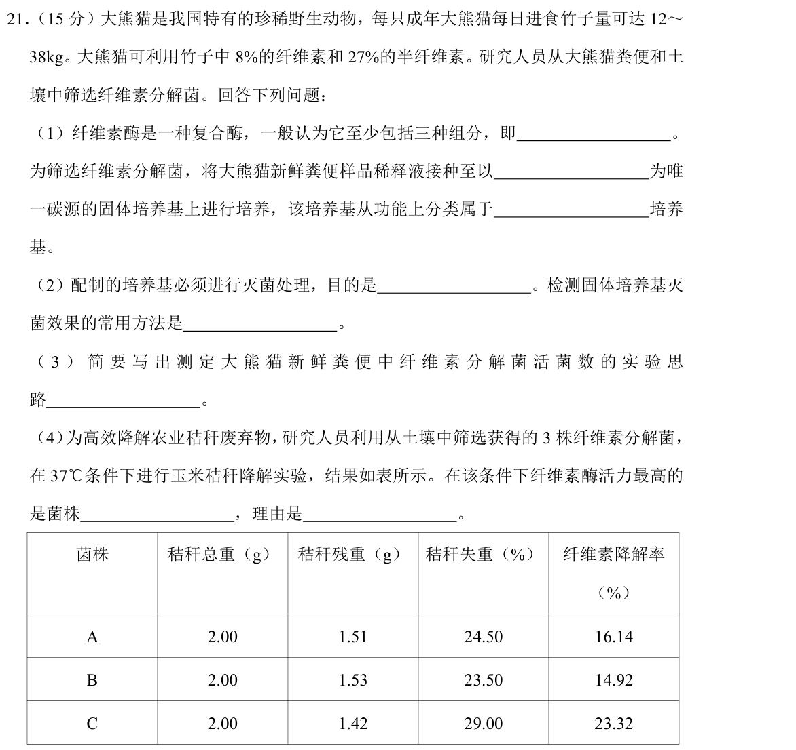
原始配图 1 · 第21题原题图版所用高中知识
以纤维素为唯一碳源可选择能分解利用纤维素的微生物。稀释涂布平板法通过菌落估算活菌数；空白培养基用于验证无菌操作。
读题与思路
纤维素酶含C₁、Cₓ、β葡萄糖苷酶，以纤维素唯一碳源选择。未接种同批平板同条件培养检验灭菌；定量稀释涂布、平行计数并换算每克粪便活菌。C的纤维素降解率23.32%最高，不能仅据总失重推纤维素酶活力。
分步解析
- 纤维素酶复合体系包括C₁酶、Cₓ酶和β-葡萄糖苷酶。以纤维素为唯一碳源，不能利用纤维素者难生长，属于选择培养基。
- 灭菌杀灭原有微生物及耐受结构，防止杂菌干扰。取不接种的同批培养基，在相同适宜条件下培养，观察是否出现菌落；无菌落支持灭菌合格。
- 称取一定质量新鲜粪便，用无菌水充分分散并作系列稀释；取已知体积在纤维素选择平板上均匀涂布，每个适宜稀释度设平行重复，培养。
- 选菌落数合适的平板，结合纤维素分解特征确认菌落后求平均；活菌浓度=平均菌落数×稀释倍数÷接种体积，再换算为每克原样的活菌数。
- 同条件下菌株C的纤维素降解率23.32%最高，且残重最低，说明降解能力最强，推定其纤维素酶活力最高。
答案
（1）C₁酶、Cₓ酶、β-葡萄糖苷酶；纤维素；选择。（2）杀灭杂菌，避免其干扰；不接种同批培养基进行同条件培养，观察有无菌落。（3）梯度稀释、定量涂布、平行培养、确认并计数菌落，再按稀释倍数和接种量计算。（4）C；相同条件下其纤维素降解率最高。
检查与易错点
菌落数是CFU估计，细胞黏连可使估计偏低。不能仅凭秸秆总失重确定“纤维素”酶活力，纤维素降解率是更直接依据。
本题来源：paper · doc-supplied · web-current-pdf
返回原卷作答与计分说明
题目与已知条件
[选修3：现代生物科技专题]M基因编码的M蛋白在动物A的肝细胞中特异性表达。现设计实验，将外源DNA片段F插入M基因的特定位置，再通过核移植、胚胎培养和胚胎移植等技术获得M基因失活的转基因克隆动物A，流程如图所示。回答下列问题：
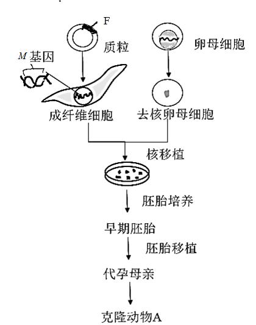
（1）在构建含有片段F的重组质粒过程中，切割质粒DNA的工具酶是________，这类酶能将特定部位的两个核苷酸之间的________断开。
（2）在无菌、无毒等适宜环境中进行动物A成纤维细胞的原代和传代培养时，需要定期更换培养液，目的是________。
（3）与胚胎细胞核移植技术相比，体细胞核移植技术的成功率更低，原因是________。从早期胚胎中分离获得的胚胎干细胞，在形态上表现为________（答出两点即可），功能上具有________。
（4）鉴定转基因动物：以免疫小鼠的________淋巴细胞与骨髓瘤细胞进行融合，筛选融合杂种细胞，制备M蛋白的单克隆抗体。简要写出利用此抗体确定克隆动物A中M基因是否失活的实验思路________。
查看原题图／原始配图
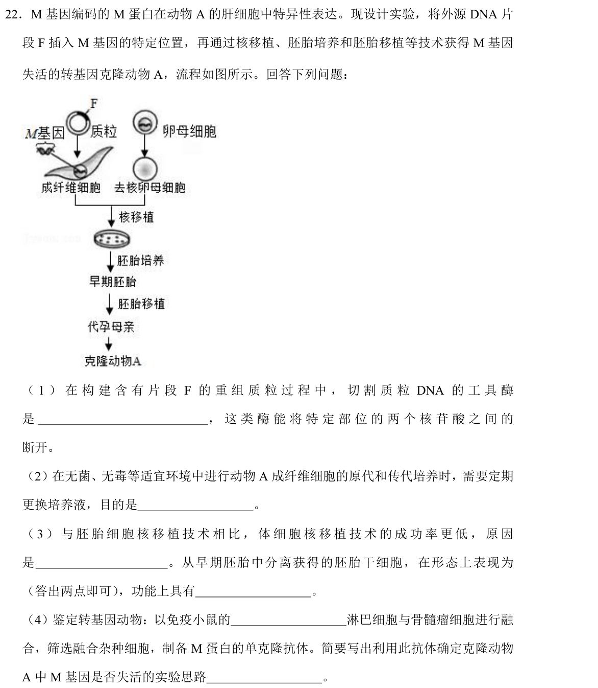
原始配图 1 · 第22题原题图版所用高中知识
限制酶切断特定位点的磷酸二酯键；核移植需重建细胞核的发育能力。单克隆抗体识别相应抗原，可用于检测蛋白质是否表达。
读题与思路
限制酶断磷酸二酯键；换液补营养去废物。体细胞分化高重编程难；胚胎干细胞小而核大、核仁显著，按教材有发育全能性。抗M单抗来自免疫B与骨髓瘤融合，必须取肝细胞蛋白检测并设置正常肝阳性对照，不能用不表达M的任意组织。
分步解析
- 构建质粒时用限制性核酸内切酶，切断DNA骨架的磷酸二酯键，不是碱基间氢键。
- 定期换液可补充营养并清除积累的代谢废物，维持适宜培养环境。
- 体细胞分化程度高，相比胚胎细胞更难恢复全能性，核移植重编程更难，因此成功率较低。胚胎干细胞体积小、核大、核仁明显；按本题教材表述具有发育全能性。
- 从经M蛋白免疫的小鼠获得B淋巴细胞，与骨髓瘤细胞融合并筛选，可制备抗M单克隆抗体。
- 分别提取克隆动物与正常动物肝细胞的蛋白质，在相同条件下用该抗体检测M蛋白，设置正常肝蛋白阳性对照和适宜阴性对照。若正常组检出M、克隆组检不出，且实验和取样有效，支持克隆动物M基因失活。
答案
（1）限制性核酸内切酶；磷酸二酯键。（2）补充营养，清除代谢产物，避免有害积累。（3）体细胞分化程度高，恢复全能性更困难；细胞体积小、细胞核大、核仁明显（任两点）；发育全能性。（4）B；取肝细胞蛋白，用已制备的抗M单克隆抗体作抗原—抗体检测，与正常动物肝蛋白阳性对照比较，无M蛋白信号支持基因失活。
检查与易错点
M只在肝细胞特异性表达，因此不能检测任意组织便下结论。抗体由杂交瘤生产，目标动物不需自己生产该抗体；“不能制出抗体说明M失活”是把检测对象弄错。蛋白阴性证据须建立在检测体系有效的前提下。
本题来源：paper · doc-supplied · web-current-pdf
题源与核验说明
- 2021年高考真题——生物（湖南卷） Word版含解析【KS5U 高考】.doc所附参考资料；SHA-256：cfba79de7f559449089a07895333e370a66e328f3a8072230025cf848e959185
- web-paper.pdf原卷文件；SHA-256：7235d9cb9b8facf50099721429de0847606c33c5a8023ad4cd1f1918a6a2468d
- 2021年湖南省新高考生物试卷（原题部分）公开原题PDF用于完整题文交叉核对；第17题组合③及第19题GH促进箭头依据下列印刷图核实。后附解析仅作比较。
- 高考直通车：2021湖南高考生物真题及参考答案原题第7图与第9图已核对：F₁×S、GH促进软骨细胞的标记均保留原样。